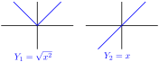
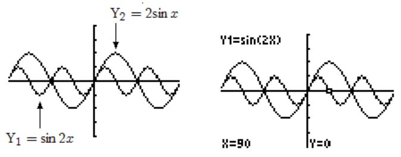
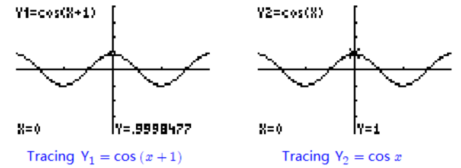
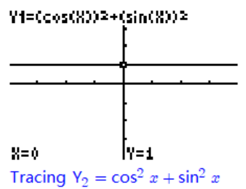
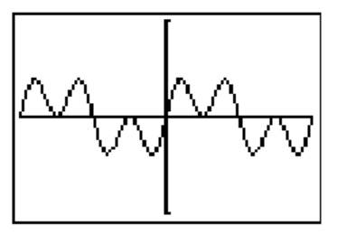
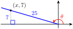
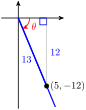
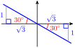

Identity.
An identity is an equation that is true for all legitimate values of the variables.




| \(\theta\) | \(\cos (\theta)\) | \(\sin (\theta)\) | \(\cos^2 (\theta)\) | \(\sin^2 (\theta)\) | \(\cos^2 (\theta) + \sin^2 (\theta)\) |
| \(0\degree\) | \(\hphantom{0000}\) | \(\hphantom{0000}\) | \(\hphantom{0000}\) | \(\hphantom{0000}\) | \(\hphantom{0000}\) |
| \(30\degree\) | \(\hphantom{0000}\) | \(\hphantom{0000}\) | \(\hphantom{0000}\) | \(\hphantom{0000}\) | \(\hphantom{0000}\) |
| \(45\degree\) | \(\hphantom{0000}\) | \(\hphantom{0000}\) | \(\hphantom{0000}\) | \(\hphantom{0000}\) | \(\hphantom{0000}\) |
| \(60\degree\) | \(\hphantom{0000}\) | \(\hphantom{0000}\) | \(\hphantom{0000}\) | \(\hphantom{0000}\) | \(\hphantom{0000}\) |
| \(90\degree\) | \(\hphantom{0000}\) | \(\hphantom{0000}\) | \(\hphantom{0000}\) | \(\hphantom{0000}\) | \(\hphantom{0000}\) |


| \(~\theta\) | \(\cos (\theta)\) | \(\sin (\theta)\) | \(\dfrac{\sin (\theta)}{\cos (\theta)}\) | \(\tan (\theta)\) |
| \(0\degree\) | \(\hphantom{0000}\) | \(\hphantom{0000}\) | \(\hphantom{0000}\) | \(\hphantom{0000}\) |
| \(30\degree\) | \(\hphantom{0000}\) | \(\hphantom{0000}\) | \(\hphantom{0000}\) | \(\hphantom{0000}\) |
| \(45\degree\) | \(\hphantom{0000}\) | \(\hphantom{0000}\) | \(\hphantom{0000}\) | \(\hphantom{0000}\) |
| \(60\degree\) | \(\hphantom{0000}\) | \(\hphantom{0000}\) | \(\hphantom{0000}\) | \(\hphantom{0000}\) |



![Runestone Academy logo]()
![MathJax logo]()